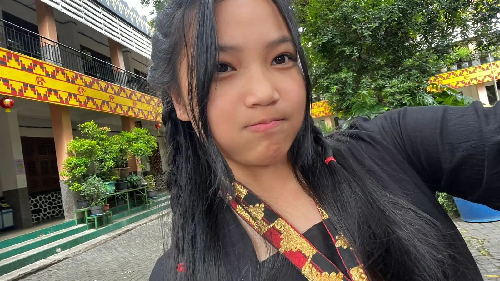
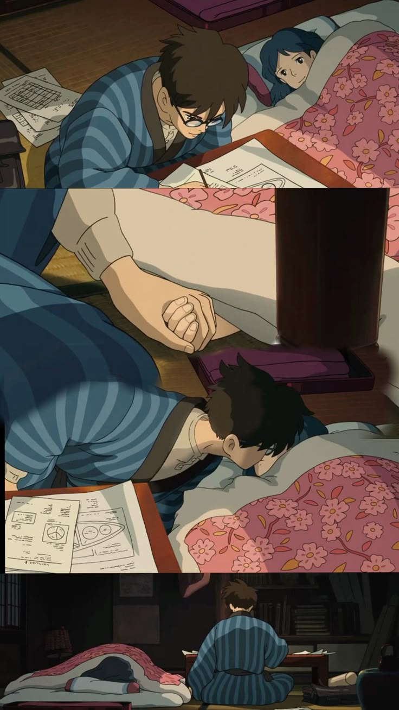
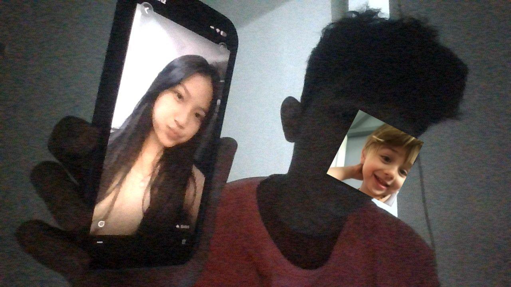
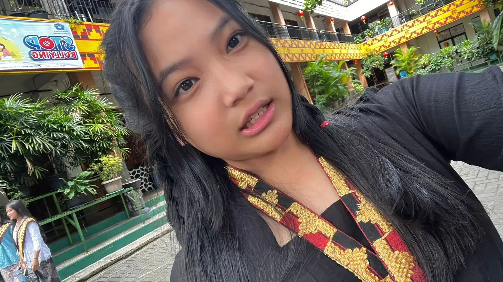

🔒 Locked Message
Only a special person can open this...
You did it! 😊
I knew it was you...

You are more than you think ❤️

I want to be honest...
From the start, I was already interested and liked you,
but I never expected we’d get this close.
Now… you’re the dream I keep choosing, even when the sky feels out of reach.

Simple, but sincere ❤️
Today, you've made everyone around you proud, especially me!
HUGE CONGRATULATIONS TO YOU! 🎉
Honestly, seeing everything you've achieved just makes me so incredibly proud.
You are absolutely amazing, and the way you handle things leaves me in total awe.
I just wanted to say...
you are brilliant, you are talented, and you are truly one of a kind. ❤️
I hope for every step you take forward,
I’m still allowed to be right there by your side to cheer you on 😊
Some feelings
stay longer than words 💙
And maybe...
this letter is my way
of keeping them alive.

Of all the ways... maybe this is the best way I can express it.